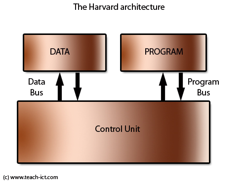

The CPU is the computational brain of any modern system. It is responsible for decoding and executing instructions fetched from RAM (main memory). This is known as the Fetch-Execute-Decode cycle which will be covered later on. First lets remind ourselves of the basic components that are neccesary for the computer to be able to process and act on information.
- First off we have Main Memory or RAM. This is responsible for housing instructions; addresses for instructions and data for those instructions
- Next we have the CPU, standing for Central Processing unit. The CPU is where all of the instructions are handeled and executed
- Then there are the buses that are responsible for transporting information between Main Memory and the CPU. There are three main types of buses: The Address Bus, the data bus, and the control bus.
- Last but not least we have the I/O Controllers. These are resposible for managing input and output
Harvard and Von-Neumann Architectures
There are two types of architectures that a processor can take the form of These are known as the Harvard and the Von-Neumann arhitecture. Both different features components within them but they both follow the Stored Program Concept. These architectures both originated from arounf the 1940s and therefore are no longer acctully used on modern systems. All modern architectures are simpl refered to as 'Contemporary' Architectures.
Harvard Arhitecture
The Harvard architecture is a computer design that separates instructions and data storage and signal channels. It differs from the von Neumann architecture, which uses the same memory and paths for programme instructions and data.  The Harvard architecture summed up:- Instructions and data are stored in seperate memory units
- Each has it's own bus
- Reading and writing data can be done at the same time
- Used by RISC processor
Von-Nuemann Architeture
The Von-Nuemann architecture now mean any form of stored-program computer where an the fetching of an instruction and a data operation cannot be completed simultaneously. This is because both data and instructions share a common bus: the data bus.
 Von-Nuemann Architecture summed up:
Von-Nuemann Architecture summed up:
- Shared memory space fo instructions and data
- Instructions and data are stored in the same format
- A single control unit or processor follows a linear fetch-execute-decode cycle
- One instruction is executed at a time
- registers are used as used as fast access points to insructions and data
RISC and CISC Processors
Lets start off with talking about the instruction set . The instruction set is the range of instructions that a computer execute. This then leads on to two types of processors. RISC (Reduced instruction set Computers) and CISC (Complex Instruction Set Computers)The Stored Program Concept
The stored program concept is a concept which allows for instructions to be stored on-board the CPU. This means that the CPU does not constantly have to search for instructions (thoeretically) from Main Memory. This.Fetch-Decode-execute Cycle
Assembly Language
For the exam you will be using the instruction set issued by the Exam bored (AQA) This instruction set for assembly language is different from other instructions sets and mus tbe followed closely otherwise you will loose marks.
- To load an instruction you will use the LDR command, then specify the register which will store the following values in the listed memory directory
- To store a vlaue you will use the STR command, then specify the register which will then take the value
in that register and store it the the following memeory loaction (given using
) - To add two values together you will use the ADD command, then give two registers, the first is where the end result will be stored and the second is where the number you are adding to is currently stored. You will the enter the second number you would like to use to do the addition using <> with the number inside
- To subtract two numbers using assembly language you will use the SUB command. This works in the same way the addition command works except it subtracts rather than adds
- To move a value from the operand into a register you first use the MOV command, followed by the register you are copying into and then the operand
- In order to compare two values you must first use the CMP command you would then call the register that you would be using to compare agiant and the value you are comparing in <>
- To use the branch command, whihc is called upon using B. YOu would then in <> write the label, this must be identical to the other label as this is where it will jump to when the bracn command is called upon
- If you would like to branch to an instructyio only when a specific condition is met, you would first call the branch command, as stated before using B, then you would give the condition in angled brackets After you have done that you give the label that you want to branch to.


The fetch-execute-decode is a cycle that allows the CPU to fetch instructions/data, decode those instructions/data amd then execute them. Below are diagrams showing the fetch execute decode cycle in action, there is also an explenation for each step as we go on.


Interrupts (FDE cycle)
If there is a peice of hardware/peripheral device that needs attention from the CPU, the CPU will have to interupt the FDE cycle in order to give it resources. For this to happen there needs to be a system that allows the CPU to stop what it's doing give the neccesary attention to the device, and then still be able to return to what it was doing before. This lead to the interupt system. It is acctually a part of the Fetch-Decode-execute cycle. The CPU will fetch and instruction, decode the instruction, execute the instruction and the check for interrupts. This will allow the CPU to finish what its doing and give a device that nedes its attention necessary resources. But this does pose an issue. If the CPU has finished the instruction it was just on, the PC would increase the number stored in it by 1, leading to the address of the nect instruction. If the CPU does recieve an interrupt, it will need to copy the instruction for that interupt into the PC, so how does the CPU remeber where it was after uit has dealt wiht the interrupt? This is where stacks come in. The CPU copies the instruction from the PC into the stack, and then takes up the instruction for the interrupt. Once that has been dealt with can themn then recopy what is in the Stack back into the CPU and continue with where it was before hand.
There are many different types of interupts, they fall into the catagories software, hardware and below a few examples are given:- Clicking on the Power OFF option
- An overflow error
Hardware and Software (Fundementals of COmputer Systems)
There are two types of hardware: External Components(Peripherals): These are the devices the user uses to communicate with the computer e.g. Mouse and Keyboard Internal Components(Processing + Storage): Housed within the computers casing, it includes all of the circuitry and electrical compnents necessary for the fucntioning of the device Software is necessary for a computer as it represents the instructions for it to carry out. Common types of software includes: Word Processing Software, MultiMedia playeres and Browsers On top of that there are two distinct types of Software: Application and System Software Application Software refers to all of the software the user will interact with/use in order to carry out their tasks
System Software exists soley for the necessary fucntioning of the computer. It itself has sub caagotries- Utilty Programs
- Library Programs
- Compilers, assemblers and interpreters
- Operating System Software
- Used to preform house keeping tasks on the device
- Common examples are include: register cleaners, back-up, file compression and disk management.
- Unlike utility programs library programs are essential for certain application (that they where built for)
- Examples include: Graphics Drivers (and most device drivers) memory managment